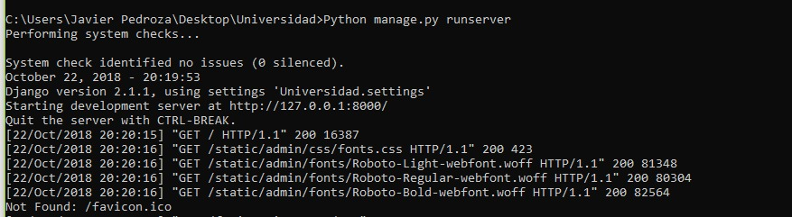
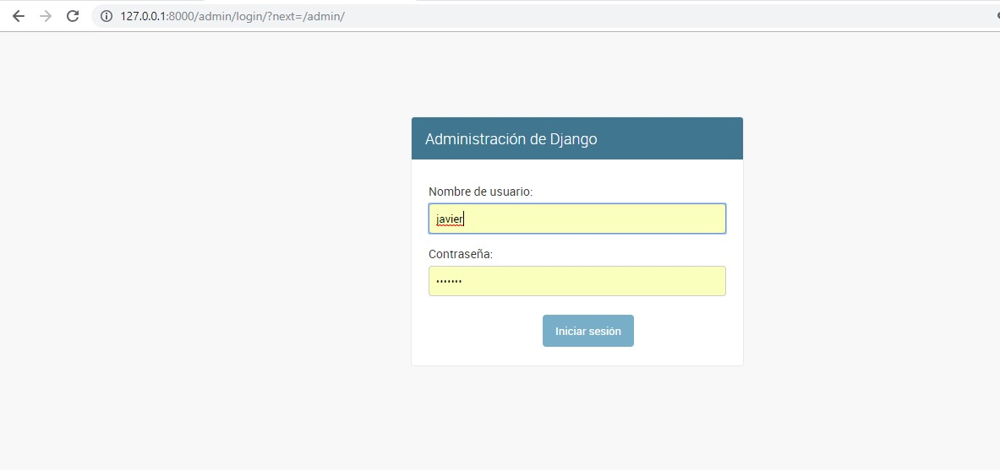
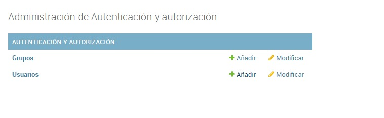
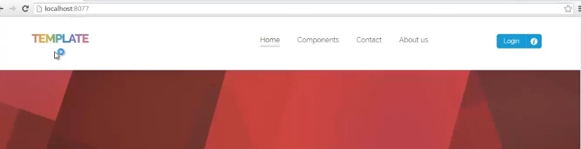
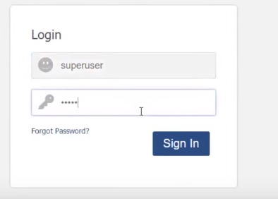
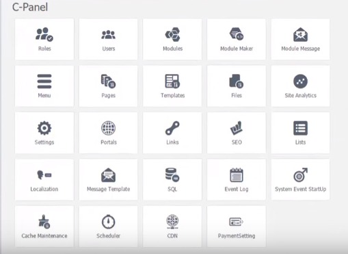
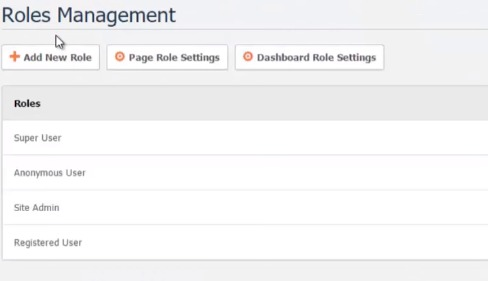
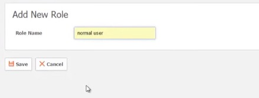
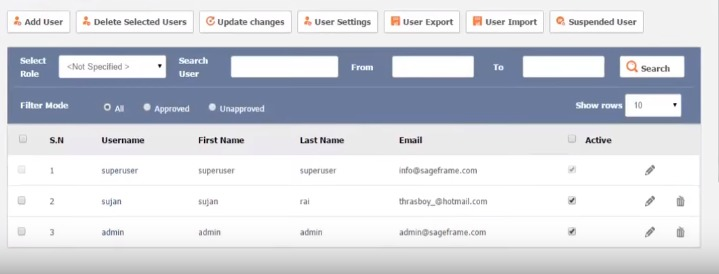

Iniciamos el servidor de django con con el comando:
Python manage.py runserver

Iniciamos en el admin con el super usuario que creamos en la practica 5.

Añadimos un nuevo grupo dando click en el boton "Añadir".

Asignamos el nombre y los permisos que tendra el grupo.
Iniciamos el local host en la pc.

Iniciamos con el super usuario.

Damos click en roles para añadir un nuevo Rol.

Añadimos un nuevo Rol.

Añadimos el nombre del nuevo Rol.

Añadimos un nuevo usuario y lo ligamos con el Rol que creamos en el paso 5.